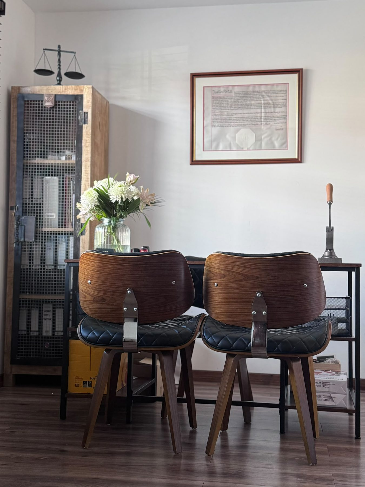

The Practice
A notarial practice in Bristol, working across England and Wales
Sikorska Notary Limited prepares, certifies and legalises documents for individuals, families and businesses. Most of what leaves our desk is destined for another country, which is where a notary’s signature and seal carry their weight.
Standing
Regulated, insured and on the record
The detail behind the practice, for anyone running a compliance check.
- Regulator
- The Master of the Faculties, through the Faculty Office of the Archbishop of Canterbury, under the Legal Services Act 2007.
- Professional indemnity
- £1 million, underwritten by HCC International Insurance Company PLC.
- Company
- Sikorska Notary Limited, a private limited company registered in England and Wales, number 14336748.
- Membership
- The Notaries Society, whose complaints procedure is approved by the Faculty Office and is free for clients to use.
- Languages
- English and Polish. Notarised translations between the two are prepared in house.
The notary
Patrycja Sikorska
Patrycja Sikorska is the notary of this practice, admitted by the Court of Faculties and working across England and Wales from Bristol.
I graduated in Law from the University of Gdańsk (Poland) in 2012 before continuing my legal education in England, where I graduated in Law from the University of the West of England in Bristol, and subsequently qualified as a lawyer.
Before qualifying as a Notary Public in 2022, I spent nearly eight years specialising in Probate and Estate Administration, developing extensive experience in handling complex legal documentation with precision, professionalism and attention to detail.
Having studied law in both Poland and England, I have developed a thorough understanding of both civil law and common law systems. This enables me to bridge the gap between different legal traditions and is particularly valuable in notarial practice, where documents frequently cross international borders and must satisfy the requirements of foreign authorities.
Since establishing Sikorska Notary, I have been committed to providing an approachable, responsive and high-quality service to both private and corporate clients.
I believe that exceptional client care is just as important as legal expertise. I take the time to understand each client’s needs, explain the process in plain English and ensure they feel informed and supported throughout. My aim is that every client leaves my office with complete confidence that their matter has been handled professionally, and feeling that a weight has been lifted from their shoulders.
Appointments are held at the Bristol office or wherever is more practical for you. Where to find us.
How we work
What you can expect
A fixed fee, quoted first
An individual fixed fee quote is provided before any notarial work begins. Where a fixed fee is not possible you are given the fee structure and a proper estimate instead.
By appointment only
Bookings are by appointment, so please call or send an enquiry rather than calling in. It means the time is yours and the right documents are ready.
We come to you, or you come to us
At the Bristol office, or at your home, workplace, care home or hospital across Bristol and the South West. Evenings and weekends by arrangement.
English and Polish
Notarised translation between Polish and English of certificates, powers of attorney and other legal documents, prepared alongside the notarial act rather than through a separate agency.
The office
Where to find us
Appointments at the office are held at:
119 Pen Park Road,
Southmead, Bristol, BS10 6BS
Office hours
Monday to Thursday, 10:00 to 17:00.
Evening, weekend and out-of-hours appointments by prior arrangement.
Bookings are by appointment only.

Regulatory
If something goes wrong
Sikorska Notary aims to provide all clients with an efficient and high standard of service. In the unlikely event that you wish to complain, please get in touch directly first so we can try to resolve it.
If we cannot resolve the matter, you may complain to the Notaries Society, of which we are a member, under a complaints procedure approved by the Faculty Office. That procedure is free to use. Beyond that, the Legal Ombudsman is available.
Full details, including addresses, insurance information and the regulatory documents, are on the legal & regulatory information page.
Tell us about the document
What it is, where it is going and when you need it. That is usually enough to quote a fixed fee straight away.